When adding a new post (or editing an existing post with no attachments), this is what the File Gallery box on your editing screen should look like.
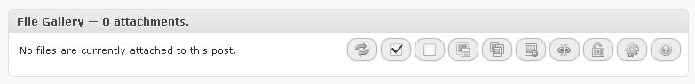
Just a notification and some buttons on the right.
When you add some attachments to the post, the box will automatically refresh itself and it will look something like this:
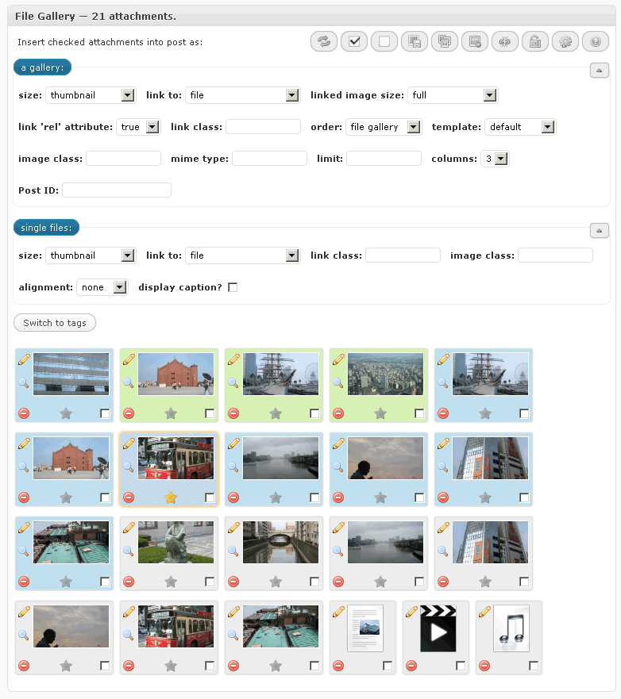
Some attachments might appear with background colors set to other than grey.
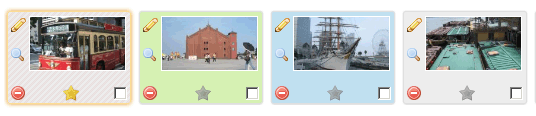
Here's what each color means:
On the top right of the box, there is a set of buttons which are used for operations on multiple attachments.
Beneath the buttons are two fieldsets.
First fieldset contains options for when you want to insert a gallery into a post.
The second one contains options for when you want to insert a one or more single images into a post.
They both operate on attachments you check in the attachment list below the fieldsets.
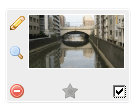You can check attachments either by single clicking the attachment thumbnail, or by clicking the checkbox in the lower right corner of each attachment representation.
After you choose your options and select attachments, use the blue buttons on top of each filedset to insert either a gallery, or a single image.
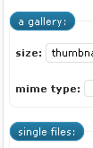
Yes, those are clickable buttons :)
In the top right corner of each fieldset is a small button / icon 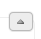. Click that button to toggle either of the fieldsets. Their state will be automatically saved and remembered for the next time you edit a post.
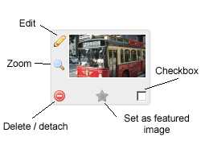
Each attachment representation has a few buttons / icons.
Top left button is the edit button which opens attachment editing screen. You can also double click on the attachment thumbnail to trigger the same action.
Beneath the edit button is the zoom button (a magnifying glass) opens a bigger version of the image in a lightbox, if that attachment is an image viewable in browser. This icon is not present if the attachment is not an image.
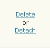In the bottom left corner is the delete / detach button. It will open a small dialog over the thumbnail when clicked: Clicking on the button again will hide the dialog, and clicking on either "Delete" or "Detach" links will open another dialog for confirmation.
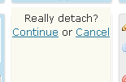Click "Continue" to delete / detach that attachment, or "Cancel" to, well, cancel the operation :)
At the bottom, in the middle, is the set / unset featured image (post thumbnail) button (a star).
In the bottom right corner is the checkbox used to check attachments for operations involving the Main buttons or the fieldsets beneath them.
Use your mouse to click on an attachment thumbnail and then drag it to another position in the list: 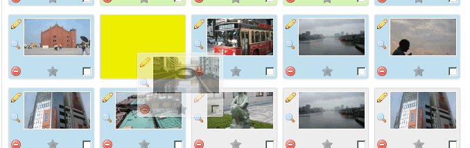
Attachment order is not saved automatically so please use the third main button the save it.
When you click the "Edit attachment" button, or double click the attachment thumbnail, you will be presented with the following screen:
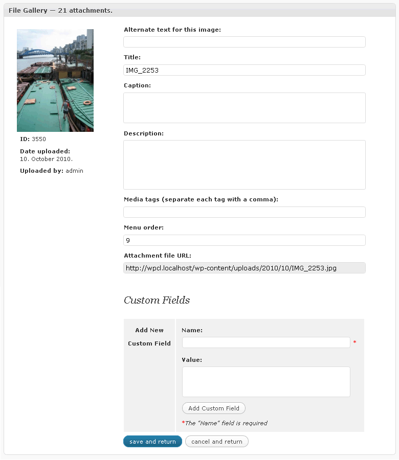
Use this form to edit attachment data and then click "save and return". Or just click "cancel and return" to do just that - return to the attachment list.
You can also press the enter key to save the data, or the escape key to cancel, and return to main File Gallery screen.
Clicking the image thumbnail in the top right corner will open its enlarged version in an lightbox, if the attachment is an image.
Sinve v1.6.5 of the plugin, attachment custom fields are also present in this dialog box. If you edit any of the custom fields here, they too will be updated when you press the 'save and return' button.
When you insert a gallery, a placeholder image will appear in the visual editor. When you click on that placeholder, File Gallery box options will automatically change to reflect those in that gallery.
While the placeholder is still selected / clicked on, whichever options you change in the File Gallery box, gallery options will be updated automatically (you'll see "Gallery contents updated" text in the upper right corner of the box).
At the moment, this works properly only in Firefox and Opera.
Internet Explorer has problems registering the first click on the gallery placeholder so you have to click twice. It then reflects gallery options, but when you try to change something, it loses focus and gallery options will not be updated. I hope I'll be able to figure out what's the problem soon.
Webkit browsers (Safari and Chrome) have problems with tinyMCE.activeEditor.selection.setContent() in tinyMCE versions prior to 3.3.6 so updating galleries is disabled until WordPress receives TinyMCE upgrade in v3.1.
Originals are attachments that have copies, but are not a copy themselves.
Copies are, well, copies of originals :)
There are two ways to copy attachments from other posts.
The first one is by using one of the Main buttons (third one) in
the File Gallery box. When that button is clicked, it will open an dialog.
The dialog looks something like this:
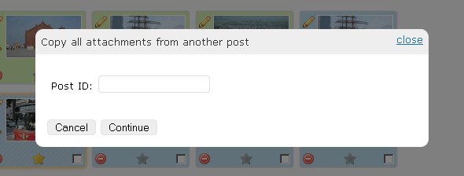
Currently, it's this simple: just type the post ID into the field
and click continue to copy all attachments from the post with that ID.
I might improve this feature in the future :)
The second way is to open the Upload/Insert window 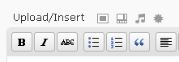, and then click the Media library tab.
Then click on the "Exclude current post's attachments" link
to show only attachments which are not already attached to current posts:
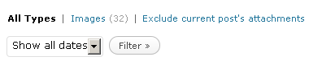.
You will then see a list of attachments that are either attached to
another post (red background), or are not attached at all (white background). Use
the checkbox on the right side of each attachment, next to the "Show"
link, to select attachments you'd like to copy to current post.
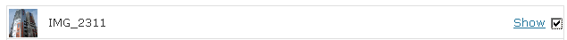
Then use the button at the bottom of the window (the
one that says "Attach all checked items to current post") to
copy selected attachments.
After the attachments have been successfully copied to the current post, a notification will show up above the button: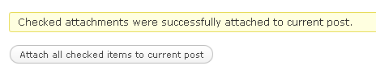
When an attachment is copied, only its data found in the database is copied into a new attachment, the actual file on the server is not duplicated.
When you try to delete an original attachment, File Gallery will warn you about it:
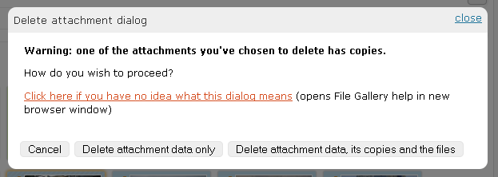
You have three options, of which the first one is obvious - click "Cancel" and the dialog will disappear.
Choosing "Delete attachment data only" will delete just the original's data. Its copies and the actual file on the server will not be deleted, and one of the copies will be promoted into an original.
Choosing the third option, "Delete attachment data, its copies and the files", will delete the original, all of its copies, and the actual file on the server. Be sure that this is what you want when clicking the button, as there is no undo.
Media tags are tags for your attachments.
They function the same as post tags do for your posts.
You can assign them to attachments either via Media library, or via attachment editing screen in File Gallery box.
You could then, for example, use them to build a custom gallery, containing only attachments that have a certain tag assigned to them.
While you're editing a post, click on the "Switch to tags" button in the File Gallery box (just above attachment list).
Attachment list will be replaced with clickable tag list.
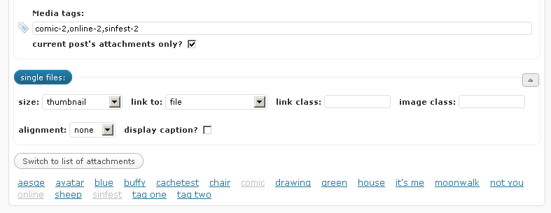
When you click on a tag, it will appear in the media tag field above, inside the first fieldset. Click on it again and it will be removed from the list.
Then insert a gallery, save your post and see the results :)
All "File Gallery" related settings are integrated into WordPress' Media settings admin page, found on the main WordPress admin menu under Settings -> Media.
Options in the first two sections ("Some default
values for when inserting a gallery into a post..." and "...and
for when inserting (a) single image(s) into a post")
only set the default values for the File Gallery options found
in the File Gallery box on post editing screens - they do not
override previously set options in gallery shortcode!
If you need to override default gallery shortcode options,
you can do that via many filters supplied within this plugin.
If you need a filter added somewhere just ask me and I'll
add it :)
My e-mail address is aesqe@skyphe.org
In other words, if under the section "Some default values
for when inserting a gallery into a post..." you set the
value of the option "template" to "file-gallery",
that will not make all your galleries use that template.
It will only set "file-gallery" as the preselected value
in the template dropdown within the File Gallery box on post editing
screens.
It's a mouthful, I know, so here's a screenshot:
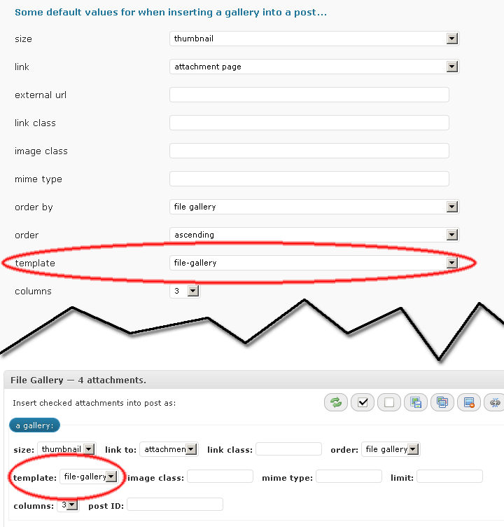
That's all
those options in the first two sections do, nothing more, I'm afraid...
With that said, most of the options are self-explanatory, I believe, but caching should probably be mentioned here.
Q: What is cache?
A: I think the first section of a post on Tutorial9 about WordPress caching plugins sums it up really nice :)
"File Gallery" caches most of the output it creates - both in frontend and backend - via WordPress' transients.
Cache is disabled by default, you'll have to enable it on the Media settings page.
Tip: be sure to clear the cache (there's a button for that on the Media settings page) when you add a new gallery template, otherwise it won't show on the dropdown list in File Gallery box on post editing screens.
File Gallery cache is automatically cleared everytime you activate or deactivate the plugin.
With this plugin are included four gallery templates:
These serve only as examples so you could create your own templates.
It's easy, but you'll (probably) need some basic knowledge of PHP.
Go to "File Gallery"'s folder and open the subfolder named "templates" - that's where the three included templates reside - and take a look at the files inside.
Template name is the name of the folder in which the template resides.
Each template consists of a gallery.php file, and a gallery.css file - bothe are obligatory. Optionally, you can also include an gallery.js file, which will be automatically enqueued.
This file contains the code for a single item in the gallery.
At the beginning of the file, two variables should to be declared:
There's a few additional variables you can declare:
There's also a counter variable - $file_gallery_this_template_counter - which stores current attachment number within the current gallery. You can see its example use in the "simple" template.
The rest of the variables you can use in a template, in form of variable_name - value
Everything else is HTML :)
This file contains the CSS code used to style your gallery template.
Tip: prefix your selectors with .gallery.template-name.
If your template is named "my-first-template", you should prefix
a selector like this:
.gallery.my-first-template .gallery-item
Now just place your custom gallery templates in a subfolder
named
"file-gallery-templates", inside your theme's folder, and they
will appear in template dropdown within the File Gallery box on post editing
screen.
For example: if your theme's folder is "my-wp-theme", your structure would look like this:
my-wp-theme
'--------> file-gallery-templates
'--------> your-custom-template
'--------> gallery.php
'--------> gallery.css
Tip: you can change the name of that folder
("file-gallery-templates") via these two filters:
file_gallery_templates_folder_abspath and file_gallery_templates_folder_url
C) gallery.js
Any kind of JavaScript can go in this file. You can set its JavaScript dependencies via the $js_dependencies variable (see above, under gallery.php).
There are two functions you might find useful in your own themes.
file_gallery_list_tags( $arguments )
will list all media tags.Default $arguments are:
array( "type" => "html", "echo" => true, "link" => true, "slug" => false, "separator" => ", " )
type = html, object, array or json
echo = whether to echo or return data (type must be html)
link = wrap a link around each media tag (type must be html)
slug = use media tag slug for link HTML instead of media tag name (type must be html)
separator = if data is echoed, what to use as separator (type must be html)
If you place <?php file_gallery_list_tags(); ?> somewhere in your theme, it will echo a list of html links to media tag archives.
I'll probably add a widget for this at some point.
Tip: if the media tag links lead you to a "404 Not found" page, go to settings => permalinks and just click the "Save changes" button to refresh the rewrite rules.
Default $arguments are:
array( 'order' => 'ASC', 'orderby' => '', 'id' => $post->ID, 'columns' => 3, 'size' => 'thumbnail', 'link' => 'attachment', 'include' => '', 'exclude' => '', 'template' => 'default', 'linkclass' => '', 'imageclass' => '', 'rel' => 1, 'tags' => '', 'tags_from' => 'current', 'output_type' => 'html', 'output_params' => 1, 'attachment_ids' => '', 'mimetype' => '', 'limit' => -1, )
(the output_type parameter can be html, array, object or json)
If attachment_ids is left empty, the function will fetch all attachments.
If tags are specified, attachment_ids will be ignored.
File Gallery will play nice with the following plugins:
Media tags - if installed, File Gallery will use "Media tags"' taxonomy name for media tags. "Media tags" uses media-tags by default, but user can enter a custom value on permalinks options page. "File Gallery" uses media_tag.
WordPress Mobile Edition - your custom gallery templates will work just fine in mobile edition.
WPML -
if you have WPML plugin installed and you're editing a post that is a
translation, you'll notice a bluish link at the bottom of the Language
metabox. It allows you to copy all attachments from the original
post
in just two clicks.
If you don't want to go through all of your gallery shortcodes in all the posts just to change template from "default" to something else, there are three filters you can use within your plugin, or within your theme's functions.php file. The following example will set the included 'list' template as default one:
function filter_fg_default_url( $url ) { // placed in a subfolder of your active theme // $url = get_bloginfo("stylesheet_directory") . "/file-gallery-templates/default"; // or just use the 'list' template which is included with the plugin $url = FILE_GALLERY_URL . "/templates/list";
return $url; } add_filter('file_gallery_default_template_url', 'filter_fg_default_url'); function filter_fg_default_path( $path ) { // placed in a subfolder of your active theme // $path = STYLESHEETPATH . "/file-gallery-templates/default"; // or just use the 'list' template which is included with the plugin $path = FILE_GALLERY_ABSPATH . "/templates/list";
return $path; } add_filter('file_gallery_default_template_abspath', 'filter_fg_default_path'); function filter_fg_default_name( $name )
{ // if your css file is using a different class than '.gallery.default', // for example .gallery.list $name = "list";
return $name; } add_filter('file_gallery_default_template_name', 'filter_fg_default_name');
On the media settings page, add colorbox under File Gallery => Auto enqueue lightbox scripts for which link classes.
Now, either add colorbox onder File Gallery => Some default values for when inserting a gallery into a post... => default link class, or add it manually as the link class when inserting a new gallery into a post.
Then add this filter to your theme's functions.php file, or create a plugin for it:
function filter_imgclass( $imageclass, $linkclass, $gallery_id ) { if( false !== strpos($linkclass, "colorbox") ) $imageclass .= " colorbox-" . $gallery_id; return $imageclass; } add_filter("file_gallery_lightbox_imageclass", "filter_imgclass", 10, 3);
That number 3 at the end of last line is important — it tells the add_filter function that your function expects three arguments — so be sure it's there :)
This code below that takes care of Colorbox is the only default preset for now, but I'll add more in the future.
$lightboxes_options = array ( 'colorbox' => array( 'linkrel' => false, 'linkclass' => false, 'imageclass' => '{script_name}-{gallery_id}', 'disable_imageclass_if_rel_false' => true ) );
You can add suport for your own lightbox scripts by using the file_gallery_lightboxes_options filter. Something like this
function filter_lightboxes( $options ) { $options['my-lightbox-script'] = array( 'linkrel' => '{script_name}[{gallery_id}]', 'linkclass' =>'{script_name}', 'imageclass' => false, 'disable_imageclass_if_rel_false' => false ); return $options; } add_filter('file_gallery_lightboxes_options', 'filter_lightboxes');
Parameters explained:
linkrel => false or text
value;
whether the script requires the rel attribute of the link for grouping
images
linkclass => false or text
value;
value of link class
imageclass => false or text
value;
value of image class
disable_imageclass_if_rel_false => true or false;
whether
to disable image class if linkrel is set to false
You can use two variable placeholders in linkrel, linkclass and image class - {script_name} and {gallery_id}. They will be replaced with the name of the lightbox script, and ID of the gallery, respectively.
Here's the built-in array:
$mime_types = array( 'word' => '*msword', 'doc' => '*msword', 'excel' => '*excel', 'xls' => '*excel', 'csv' => 'text/csv, text/comma-separated-values', 'powerpoint' => '*powerpoint', 'ppt' => '*powerpoint', 'pdf' => '*pdf', 'rar' => '*-rar*', 'zip' => '*compress*, *zip', '7zip' => 'application/x-7z-compressed' );
Keys (on the left) are shorthands you can use when inserting a gallery (mime type box), but you can also use all the values (on the right).
For example, all three gallery shortcodes below will give you the same results:
[gallery mimetype="pdf"] [gallery mimetype="*pdf"] [gallery mimetype="application/pdf"]
Differences:
A bit of explanation:
if a shorthand name for a mime type is not found as a key in the above array, it will go straight into the wp_post_mime_type_where function which translates values like this:
pdf OR pdf/ => "mime_type LIKE 'pdf/%'"
/pdf => "mime_type LIKE '%/pdf'"
*pdf => "mime_type LIKE '%pdf'"
*pdf* => "mime_type LIKE '%pdf%'"
application/pdf => "mime_type = 'application/pdf'"
If you want to work with multiple mime types, just separate them with a comma (,).
You can add your own shorthands by using the file_gallery_mime_types filter
function filter_file_gallery_mime_types( $mime_types ) { $mime_types['mymimetype'] = '*mymimetype'; return $mime_types; } add_filter('file_gallery_mime_types', 'filter_file_gallery_mime_types');
If you want me to add a new filter somewhere - just leave a comment or e-mail me and I promise I'll add it as soon as humanly possible :)
Please let me know If I've failed to explain something.
Thanks ;)